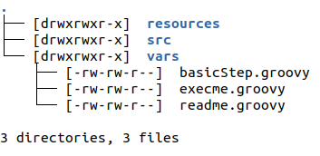
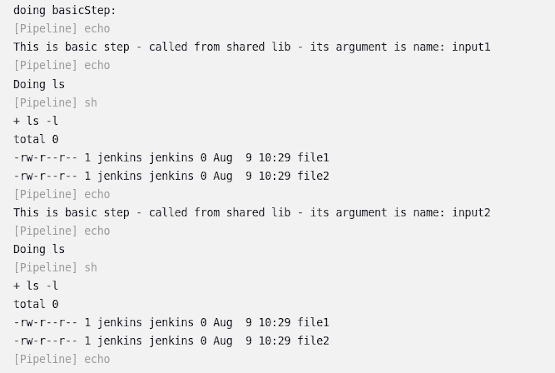
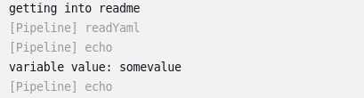
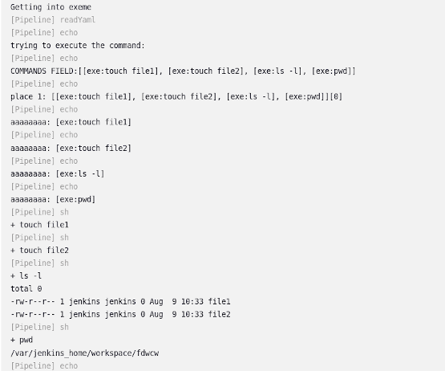

08.08.2023 - Tuesday
Information is from this project
Jenkins with shared library
You can read this post directly, but it assumes the knowledge from this post
The shared lib will work with the image that was created in this post.
I like to start this by creating a designated directory for this project.
mkdir sharedLibProject
Now I will create a specific directory for the sharedLib:
mkdir sharedLibrary
You can clone the specific directory of the sharedlib into the dir created with the method mentioned in README of this project.
It is mentioned under the header: Clone only sharedlib dir with sparse checkout.
Instead, you can clone the whole project and copy only the needed dirs.
If you create it by yourself, the directory structure must be like in the image:

The files in the vars dir are groovy files that can be used as steps in the pipeline(I will elaborate on it later).
---
For having yaml files defining arguments in my pipline, I will create another directory that will contain them:
mkdir configfiles
And create a git repository to contain Jenkinsfile that the jenkins configuration will look at, like in the last post mentioned, under the Pipeline definition
I want to make the directory of Jenkinsfile, a git repo for jenkins to use as the Script from SCM directory.
So I will do the next commands:
git -C pipelines add Jenkinsfile
git -C pipelines commit -m "Jenkins file with sharedLib"
The -C flag enables doing the git command when I am in other directory, the general project dir that I am currently in.
Now I will copy the shared library in this project and the configfiles directory which contains only one file for this example:
cp -r ../configfiles configfiles
cp -r ../sharedLibrary sharedLib
As ealier, I want to make sharedLib a git repo, for the pipeline to be able to load with library directive, and add files, using the -C flag
git init sharedLib
git -C sharedLib add .
git -C sharedLib commit -m "all shared lib content"
I want to run a container ,with jenkins on it, that will be able to read the yaml files from configfiles/ dir and use values in those files.
To read yaml files I will need to use the directive readYaml of jenkins.
To use that I have to have the plugin - pipeline-utility-steps(docs) installed.
I will take the image from the post and add the name of the plugin to the plugins listed in the file recommended-plugins.txt.
If I followed the process in the post mentioned, it will be installed with the jenkins-plugin-cli tool.
you can see the usage here in line 8.
Lets assume I called the new jenkins image(that have the plugin mentined installed in it) -
jenkins:v3
The command to start the container:
docker run --name myjenkins -td -p 8080:8080 -v $(pwd)/pipelines/:/var/pipelines -v $(pwd)/sharedLib/:/var/sharedLib -v $(pwd)/configfiles:/var/configfiles jenkins:v3
Obviously name and local port can be chosen for whatever you want
Jenkinsfile - library directive:
The important part in the jenkins file that loads the shared library is:
library identifier: 'SharedLibrary@master',
retriever: modernSCM([$class: 'GitSCMSource', remote: "/var/sharedLib"]),
changelog: false
The library directive is loading a library, in this case it is used a retriever method.
Its named modernSCM and the GitSCMSource class, which clones a git repository.
I brought the git repo to the container with a volme in the docker run command.
Now I can use its local path /var/pipelines (jenkins is also enabled for local repos from last post).
---
this step is taking a name as an argument and prints it
---
basicStep
def call(name) {
echo "This is basic step - called from shared lib - its argument is name: ${name}"
echo "Doing ls"
sh("ls -l")
}
this step is taking a name as an argument and prints it
---
readme
def call() {
echo "getting into readme"
config=readYaml file:'/var/configfiles/myfile.yaml'
echo "variable value: ${config.field1.field2.field3}"
}
This step is reading configfile.yaml and prints the value:
field1.field2.field3
---
execme
def call(some) {
config=readYaml file:'/var/configfiles/myfile.yaml'
commands=config.command
for (en in commands) {
en.each { itr ->
sh "$itr.value"
}
}
}
Take the commands part from the yaml file - which is a list of maps.
It maps exe to a command.
So Going over the list of command and using sh jenkins directive to execute them.
---
Jenkins file - using steps loaded
basicStep 'input2'
readme()
execme()
basicStep - one of the steps loaded with shared library.
It loads a variable - In this case printing an argument given to it
readme() - I have to call it as the function because its not getting an argument.
It reads the value: config.field1.field2.field3, from a yaml file that looks like this:
field1:
field2:
field3: "somevalue"
command:
- exe: "touch file1"
- exe: "touch file2"
- exe: "ls -l"
- exe: "pwd"
exeme() - Exeute the commands - that are in list in the yaml file under the name "exe"
Afterall of this you should get:
basicStep output:

readme output:

execme output:

This was a very basic usage of using shared lib to load steps written by you to your jenkins pipeline.
From here you can take it and use whatever Groovy has to offer to create much more complex pipelines.
Enjoy!
The project that everything is taken from.